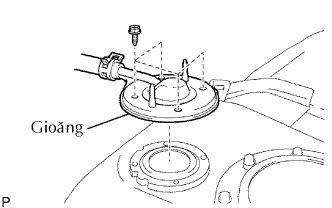
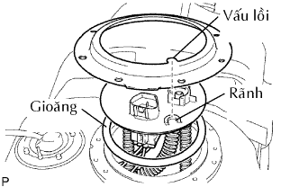
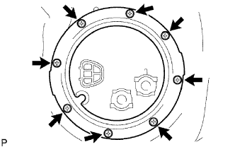
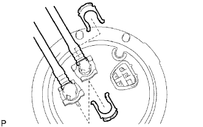
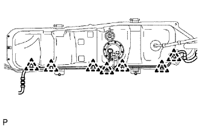
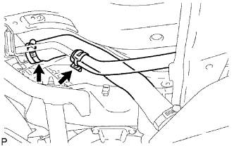

BÌNH NHIÊN LIỆU > LẮP |
| 1. LẮP BỘ BẢO VỆ BÌNH NHIÊN LIỆU NO.1 |
Lắp miếng bảo vệ bằng 3 bu lông.
| 2. LẮP CỤM VAN CẮT NHIÊN LIỆU |
Lắp van cắt nhiên liệu.
Lắp ống nhiên liệu vào ống thông hơi bình xăng.
|  |
Lắp một gioăng mới vào ống thông hơi bình xăng.
Lắp ống thông hơi bình xăng bằng 4 bu lông.
| 3. LẮP CỤM ỐNG NHIÊN LIỆU CÓ BƠM VÀ ỐNG BỘ ĐO |
Bôi một lớp mỏng mỡ hoặc xăng lên gioăng mới và lắp nó vào bình xăng.
|  |
Hãy đặt ống của bộ đo vào bình xăng.
|  |
Lắp tấm bắt phía bằng 8 bulông.
 |
Lắp 2 ống (mềm) bình nhiên liệu bằng 2 kẹp nối ống.
| 4. LẮP ĐỆM BÌNH NHIÊN LIỆU NO.1 |
 |
Lắp 2 đệm bình xăng mới.
| 5. LẮP BÌNH NHIÊN LIỆU |
Hãy đặt bình xăng trên kích.
|  |
Hãy nâng kích lên và cài khớp kẹp dây điện. Sau đó, lắp giắc nối bộ đo nhiên liệu vào bình xăng như trong hình vẽ.
Lắp 2 đai bắt bình nhiên liệu bằng 2 chốt và 2 kẹp.
Lắp 2 đai chằng bình xăng bằng 2 bu lông.
| 6. LẮP ỐNG VÀO CỦA BÌNH XĂNG |
Lắp ống nạp bằng bulông.
| 7. LẮP BÌNH NHIÊN LIỆU VỚI ỐNG ĐỔ XĂNG VÀO |
|  |
Lắp ống (mềm) nạp nhiên liệu vào ống nạp của bình xăng.
| 8. LẮP ỐNG THÔNG HƠI BÌNH NHIÊN LIỆU |
Nối ống thông hơi bình xăng với ống nạp xăng vào bình nhiên liệu.
| 9. LẮP ỐNG NHIÊN LIỆU CHÍNH VÀ ỐNG HỒI NHIÊN LIỆU |
Lắp cút ống hồi nhiên liệu vào ống thép. Sau đó lắp cút ống nhiên liệu chính vào ống thép. Hãy ấn 2 phần vào với nhau một cách chắc chắn đến khi nghe thấy tiếng "tách".
| 10. LẮP KẸP ỐNG NHIÊN LIỆU NO.3 |
Lắp kẹp ống vào ống nhiên liệu.
| 11. LẮP CỤM NẮP BÌNH NHIÊN LIỆU |
| 12. NỐI CÁP ÂM VÀO CỰC ÂM ẮC QUY |
| 13. TIẾN HÀNH THIẾT LẬP BAN ĐẦU |
Tiến hành thiết lập ban đầu (Xem trang Kích chuột vào đây).
| 14. KIỂM TRA RÒ RỈ NHIÊN LIỆU |
Nối máy chẩn đoán với giắc DLC3.
Bật khoá điện ON.
Bật công tắc chính của máy chẩn đoán ON.
Hãy chọn thử kích hoạt và truy nhập và menu sau: Powertrain / Engine and ECT / Active Test / Control the Fuel Pump / Speed.
Kiểm tra rò rỉ nhiên liệu.
Kiểm tra rằng không có rò rỉ nhiên liệu trong hệ thống nhiên liệu sau khi tiến hành bảo dưỡng.